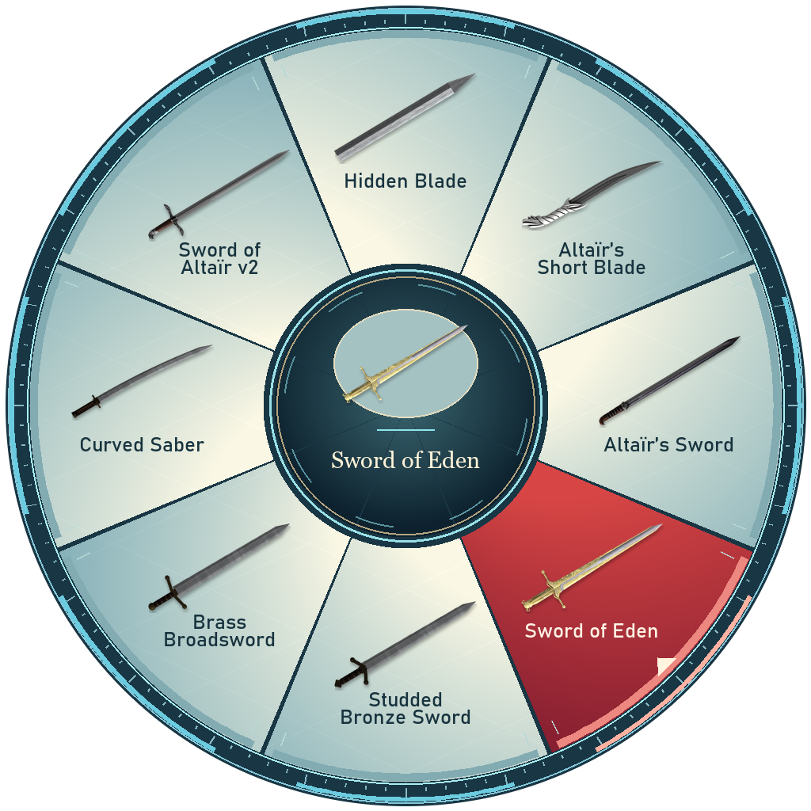
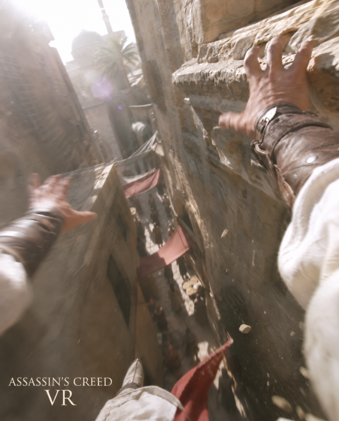

GENETIC MEMORY · THE HOLY LAND · 1191
FIRST-PERSON VR · 6DoF HEAD TRACKING · FULL MOTION CONTROLS FOR BOTH HANDS · STEREO OPENXR
Masyaf and Jerusalem in a headset. Tracked hands, a sword you swing yourself, climbing with your own grip — running on the original game through OpenXR.
Become Altair in full immersive VR with this Assassin's Creed VR port. Wield the hidden blade and Altair's sword in first person, and be an assassin in the Holy Land of Jerusalem.
Hold either grip at your chest, point that hand’s thumbstick toward a weapon, then release the grip to draw it. The crimson sector and enlarged center picture show your selection.

Headset testing confirmed attacks and blocking with the sword’s flat and edge. Click the right thumbstick to open VR settings.

MEMORY PLAYBACK
A few seconds each, playing on a loop. The file name under every clip is where it lives in the repo.
Climbing with your grip
Squeezing a ledge and pulling up hand over hand.
clips/climbing.mp4
The hidden blade flick
A turn of the wrist, and it is out.
clips/hidden-blade.mp4
The in-VR menu
Combat, Blade, Comfort, Extras and Mods, floating in front of you.
clips/vr-menu.mp4
The sword tab
Swapping blades in the Mods tab and drawing the new one.
clips/sword-tab.mp4
Combat
Your own swing, your own guard. The blade cuts where you put it.
clips/combat.mp4
DECODED MEMORIES
01
Your own hands in first person, with live fingers and a body that moves under you.
02
Swing it yourself. Hits land where the blade lands, blocks come from your guard.
03
Squeeze a ledge, pull down, reach for the next hold with your free hand.
04
Flick your wrist to extend it. Stealth kills from behind on anyone unaware.
05
Combat, Blade, Comfort, Extras and Mods tabs, floating in front of you. Saves itself.
06
Sword of Eden, Sword of Altair v2, Altair's Short Blade from your back, and more.
07 · COMING NEXT
Step out of the Animus and walk the present-day sections in VR as Desmond — the lab, the room, and the machine you have been lying on. Same tracked hands and the same body, in the modern-day world instead of 1191.
INITIALISE
For the original Assassin's Creed (2007) on Steam for Windows. The base VR mod has been tested on Meta Quest 3.
RUN.bat into the game folder, next to the game's .exe.RUN.bat each time you play.In the headset, click the right thumbstick to open the settings menu.
> git clone https://github.com/ Hngamers191/AC1-VR-MOD > copy mod folder → game folder > RUN.bat OPENXR SESSION READY
IN TESTING
Headfirst falls, sword throwing and procedural weather are in active testing.
The mod includes hand and head collision with scenery and improved NPC detail near the edge of the VR view. It is experimental, and the cape and legs can still appear in first person. If you hit a problem, share your headset, the scene and steps to reproduce it in Issues.
DESYNCHRONISATION
People nearby can stretch or distort for a moment. It is a known quirk of the third-person view and it does not affect play.
Fights with several guards can slow down for a few seconds. That is normal for this build and it settles once the fight ends.
Found something else? Message the authors. Open an issue on the repository, or get in touch with HNgamers or MonsterDeadwood directly. Say what you were doing and what happened, and send the newest folder from logs\runs — that folder is what makes a fault findable.
CREDITS
The VR mod
HNgamers
MonsterDeadwood
Sword models
Vortix — Sword of Eden
Yuri — Sword of Altair v2
Milacetious — Short Blade
The game
Assassin's Creed, Altair and the original designs are Ubisoft's.
NOTHING IS TRUE // EVERYTHING IS PERMITTED